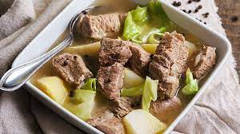
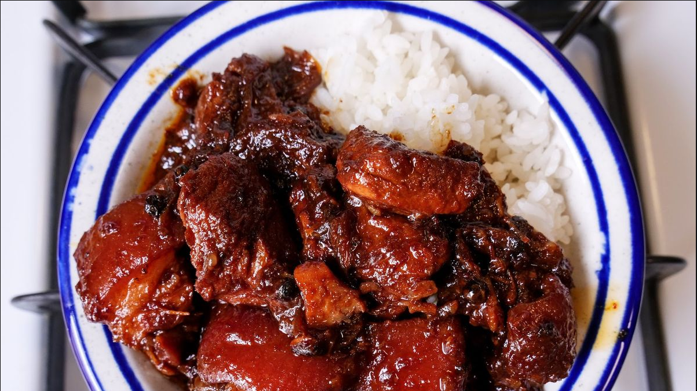
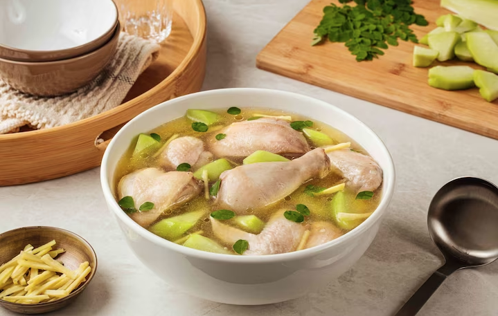

Nilaga
Adobo
Pork Sinigang

Chicken Tinola
Max is incredibly good when it comes to stews and soups as they're often easy to make and require no effort, freeing you up to do some other things. This page contains a few of his favorite stew and soup recipes, especially his signature Sweet Pork Adobo.
Back to home